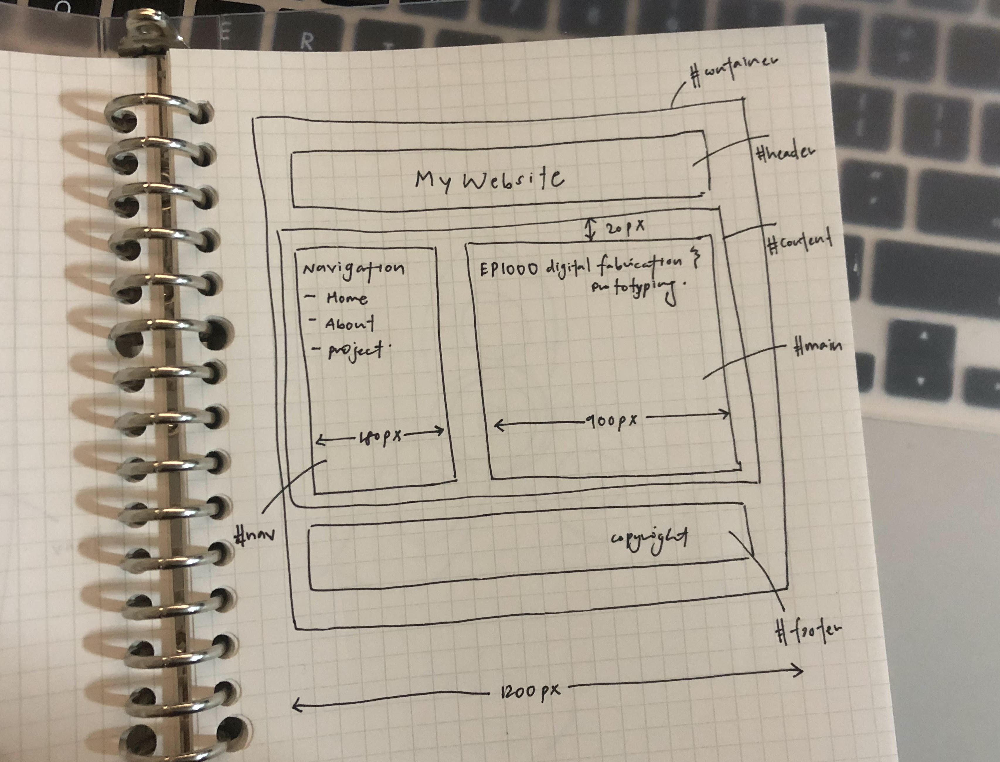
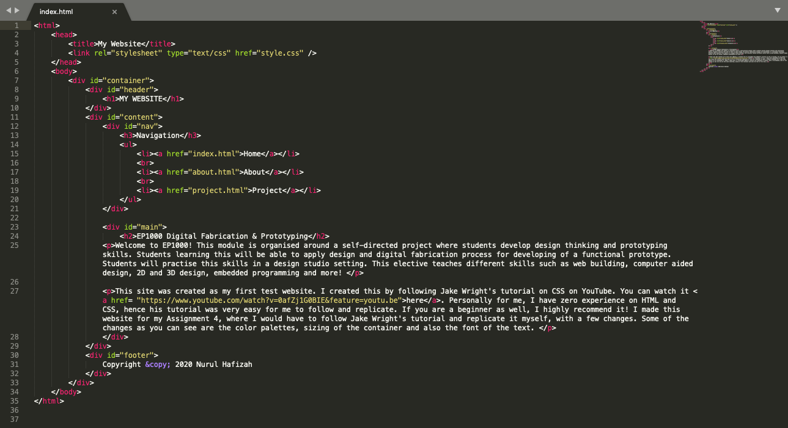
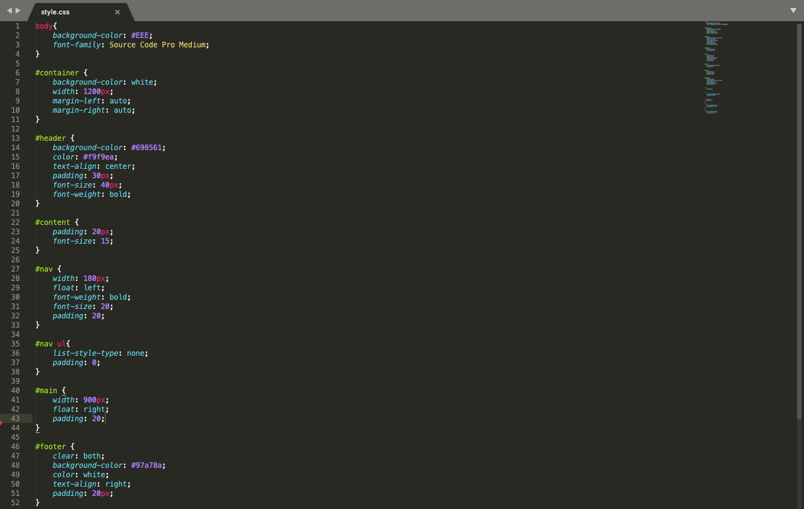

Web Development
For web development, I learnt all about HTML and CSS. We were tasked to follow Jake Wright's tutorial on CSS:
Here, I'll show you how I created my website. You can download a zip file of my website to know more on how I did a certain thing specifically!
| Firstly, I drew out how I wanted my website to look like. I divided the different sections into different divisions. This is when we code later on, it is easier to catagorise and arrange our content according to our liking. Also, I specified the width of my different sections. For my container, I made it a width of 1200px. For my navigation bar, it is 180px. And for my main division, I gave it a width of 900px. Then, I started to code out my home page. First you should start with the 2 base webpages, "index.html" and "style.css". Do note to spell them correctly or else the website would not turn up. |
 |

Above was how my 'index.html' file looks like. As you can see, I have incorporated the division "container", "header", "content", "main" and "footer" respectively according to my sketch I drew.
Other elements I included in this webpage are:- <title> </title>: the "title" tag is required in an HTML document. This is to give a title to your website so that it defines a title in the browser toolbar. This is also to allow a title to be displayed for the page in search-engine results.
- <ul> </ul>: this stands for "Unordered List". This is to list your text in point form. For an unordered list, the items will be marked with bullets by default. Alternatively, there is an Ordered List: "<ol> </ol>", where the items will be marked with numbers by default. For every list item, do start it with a "<li>" tag.
- <h1> </h1>: this stands for header. Hence, you can use this tag whenever you want to have a header at the start of your page or paragraph!
- <p> </p>: this stands for paragraph. When you are writing your text, you can insert this tag to seperate the text into different parts. This is useful for me when I want to start my sentence at the next line.
- <a> </a>: this tag defines a hyperlink, which is used to link from one page to another. I inserted in in my navigation section, so that there will be a link to bring the user to another page. Also, you can see that I have included a YouTube link with the "<a>" tag as well.

Above was how my style.css file looked like. CSS stands for Cascading Style Sheets. CSS is used to format the layout of a webpage. With CSS, you can change the color, font, the size of your text, how elements and text are being laid out, the background colour and more. Fisrtly, do remember to link yout style.css file to your index.html file. Just insert this link: <link rel="stylesheet" type="text/css" href="style.css"/> at the top of your index.html file.
Whenever you want to target a specific division, do remember to start with a "#". For example, #nav, #content. Then, remember to open and close it with curly brackets.
Some common CSS elements are:- color: you can adjust the color of the text. Just insert the color of choice, or a hex code to be more specific!
- background-color: this is to change the color of the background, you can insert this is your header, footer and more.
- font-family: this is to change the font of your text. I suggest downloading your fonts from Google Font, and your font will change accordingly.
- font size: this is to change the font size of your text. This is helpful for differentiating the different sections of your text.
- padding: this is to generate space around an element's content. "Padding" is just generally all around content. However, if you want to be specific and only target one side, you can insert "padding-left", "padding-right", "padding-left", "padding-top" or "padding-bottom".
- width: this is to adjust the width of your content. For example, I have already predetermined my desired width for my navigation bar, main, and container.
- list-style-type: you can adjust your list style. For me I put "list-style-type: none;" for my navigation bar to get rid of the bullet points.
- float: this is for positioning and formatting your content. For example, "float: right;" makes your content move to the right of your conatiner and "float: left;" moves your content to the left of the container. For example, you can use this to separate your text and your image. You can just inser this float element.
Personally for me, I am a complete beginner in web builidng. However, I found Jake Wright's tutorial very useful and easy to follow along. I reccommend you following step-by-step and replicate his website. You can then tweak it according to your preference.
Another reference I reccomend is w3schools. They explain every single thing you need to know about html and css. However, if you go through the whole website it will take very long. Hence, I reccomend you use w3schools if you are unsure about a specific thing and they will have a page dedicated to teach you that.
If your website is not showing up, I reccomend you check these steps to ensure everything is correct:
- Ensure all your spelling is correct. For example, your index.html file and your style.css file should be spelled correctly. Also your elements should be spelled the same so your index.html and style.css file are able to sync up. For example, if you name your division "content", in your style.css file, it should also be spelled "content".
- Always remember to end a close element to end your text. For example, if you have a "<div>" bracket, do remember to add a "</div>" at the end. Also, in your style.css file, remeber to end your curcly brackets too.
- This might be obvious, but do save your text editor files before refreshing your website. For a shortcut, press Ctrl+S to save it.